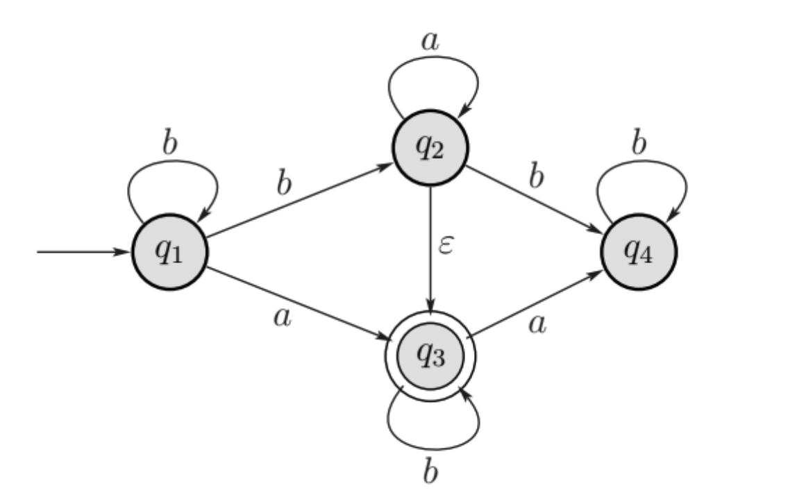
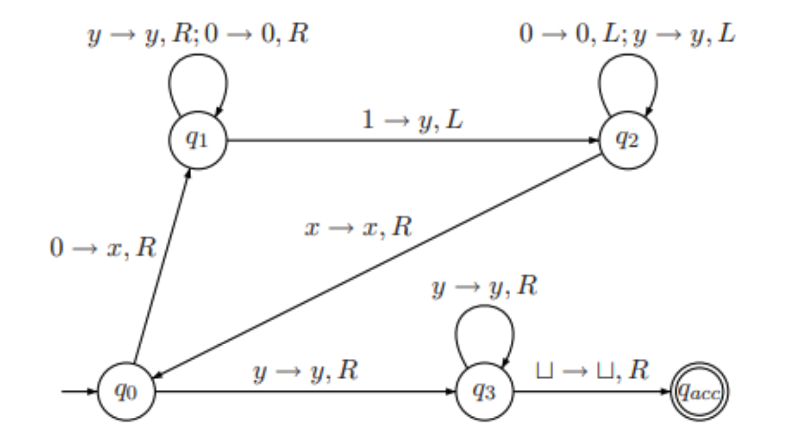
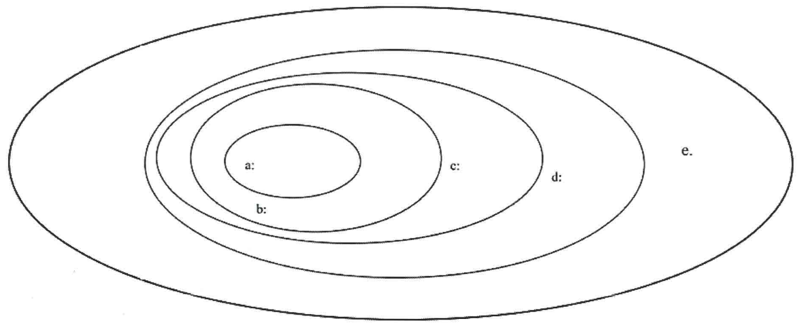
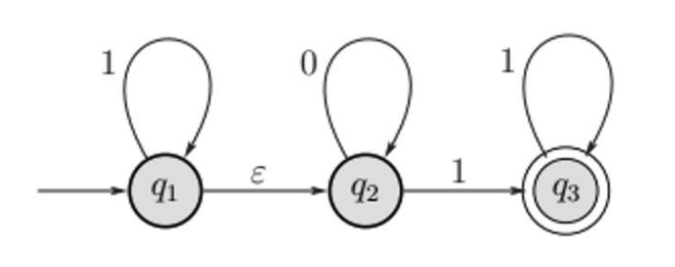
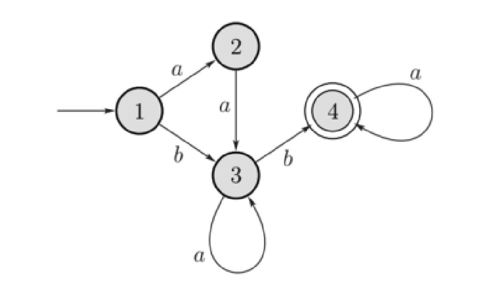

א. האם השפה הבאה מעל הא”ב \(\{a,b\}\) היא שפה רגולרית? הוכיחו את
טענתכם. \(A = \{w \in \Sigma^* : |w| \text{ is
odd, and the middle symbol of } w \text{ is } b\}\)
כלומר, השפה \(A\) מורכבת מכל המילים
באורך אי-זוגי, כאשר האות האמצעית במילה היא \(b\).
תשובה:
ניקח את \(w=a^pba^q\) שנמצאת בשפה
\(A\).
לפי למת הניפוח, \(w\) ניתנת לכתיבה
כ-\(w=xyz\), כאשר \(|xy|\leq p\) ו-\(|y|>0\).
לכן \(xy\) מורכבת רק מ- \(a\)ים.
אם ננפח את \(y\) למעלה, \(b\) כבר לא יהיה באמצע המילה, לכן הניפוח
יהיה בשפה. בסתירה ללמה. מסקנה: \(A\)
אינה רגולרית.
ב. בנו ביטוי רגולרי מעל הא”ב \(\{a,b\}\) המייצג כל המחרוזות באורך אי זוגי
המסתיימות באות \(b\).
תשובה:\(((a\cup b)(a\cup
b))^* b\)
ג. בנו ביטוי רגולרי שמייצר את השפה שה-NFA הבא מזהה.

תשובה:\(b^*(a\cup
b)a^*b^*\)
שאלה 2
א. תהיינה C,B,A שפות חסרות-הקשר.
קבעו לגבי כל אחת מהשפות הבאות אם היא שפה חסרת הקשר. יש להוכיח את
טענתכם. \(\overline{A}(B \cup C)\)\(A(B \cup C)\)
תשובה:
השפה \(\overline{A}(B \cup C)\)
אינה בהכרח חסרת הקשר. דוגמה נגדית: ניקח את \(B\) ו- \(C\) להיות שתי שפות ריקות. ואת \(\overline{A}\) להיות שפה שאינה חסרת
הקשר.
השפה \(A(B \cup C)\) היא חסרת הקשר,
מאחר ששפות חסרות הקשר סגורות תחת איחוד ושרשור.
ב. נתון הדקדוק הבא: \(\{S \to AB, S \to
\epsilon, A \to aB, B \to Sb\}\)
הוכיחו שהדקדוק זה יכול לגזור את המחרוזות \(aabbbb\).
תשובה: נראה גזירה:
\(S\)
\(AB\)
\(aBB\)
\(aSbSb\)
\(aABbb\)
\(aaBSbbb\)
\(aaSbbbb\)
\(aabbbb\)
האם אפשר לגזור בדקדוק הזה את המחרוזת: \(bbba\)
תשובה: לא. המילה לא יכולה להתחיל באות \(b\).
שאלה 3
יהיה \(G\) גרף לא מכוון. נגדיר את
שתי השפות הבאות: \(\text{SPATH} = \{\langle G,
a, b, k \rangle | G \text{ contains a simple path of length at most } k
\text{ from } a \text{ to } b\}\)\(\text{LPATH} = \{\langle G, a, b, k \rangle | G
\text{ contains a simple path of length at least } k \text{ from } a
\text{ to } b\}\)
א.הוכיחו שהשפה \(\text{SPATH}\)
שייכת למחלקה P.
תשובה: תיאור אלגוריתם: “עבור קלט \(\langle G, a, b, k \rangle\) כאשר \(m\) הוא מספר הצמתים בגרף \(G\):
נסמן את צומת \(a\) ב- \(0\).
עבור כל \(i\) מ- \(1\) עד \(m\):
אם קיימת קשת \((s,t)\) המחברת בין
צומת \(s\) המסומנת ב- \(i\) לצומת \(t\) שאינה מסומנת, נסמן את \(t\) ב- \(i+1\).
אם \(b\) מסומנת בערך קטן או שווה ל-
\(k\), נקבל, אחרת,
נדחה.”
ב. הוכיחו שהשפה \(\text{LPATH}\)
היא NP-שלמה.
רמז: אפשר להניח ש- \(\text{UHAMPATH}\) היא NP-שלמה;
נזכיר ש- \(\text{UHAMPATH}\) היא
שפת כל המחרוזות \(\langle G, a, b
\rangle\) כאשר \(G\) הוא גרף, ו
\(a\)-ו \(b\)-הם צמתים בגרף \(G\) וקיים מסלול המילטוני מהצומת \(a\) לצומת \(b\).
תשובה:
ראשית, \(\text{LPATH}\) היא NP. כי
אם יש לנו מסלול באורך גדול או שווה ל- \(k\), נוכל לבדוק את המסלול הזה בזמן
פולינומיאלי.
נראה ש- \(\text{LPATH}\) היא
NP-שלמה:
בעזרת רדוקציה מ- \(\text{UHAMPATH}\) ל- \(\text{LPATH}\): “עבור קלט \(\langle G, a, b \rangle\) כאשר \(a\) ו- \(b\) הם צמתים בגרף \(G\):
יהי \(k\) מספר הצמתים בגרף \(G\).
נדפיס את \(\langle G, a, b, k
\rangle\).”
אם \(\langle G, a, b \rangle\in
\text{UHAMPATH}\), אזי \(G\)
מכיל מסלול המילטוני באורך \(k\), מ-
\(a\) ל- \(b\), אזי \(\langle G, a, b, k \rangle\in
\text{LPATH}\).
אם \(\langle G, a, b, k \rangle\in
\text{LPATH}\), אזי \(G\) מכיל
מסלול פשוט באורך \(k\), מ- \(a\) ל- \(b\), אבל ל-\(G\) יש \(k\) צמתים, אזי המסלול הוא מסלול המילטוני,
כלומר \(\langle G, a, b \rangle\in
\text{UHAMPATH}\). ## שאלה 4
א. הוכיחו או הפריכו: “נתון שהשפות \(L_1\) ו-\(L_2\) ניתנות להכרעה. כמו כן ידוע ש- \(L_1\subseteq L \subseteq L_2\). אזי \(L\) ניתנת להכרעה.”
תשובה: הטענה אינה נכונה. דוגמה נגדית: \(L_1=\emptyset\), \(L_2=\Sigma^*\), ו- \(L\) שפה בלתי כריעה כלשהיא מעל הא”ב \(\Sigma\).
ב. נתונה מ”ט: 
כאשר \(\Sigma=\{0,1\}\), ו-
\(\Gamma=\{0,1,x,y,\sqcup\}\), וכל
המעברים שאינם מצויירים באיור מובילים למצב דוחה.
מהי השפה שמכונה זו מזהה?
תשובה:\(L=\{w\in\Sigma^*| w=0^n1^n,n\geq 1\}\)
רשמו סדרת קונפיגורציות חישוב של המכונה על הקלט \(01\).
תשובה:
\(q_0 01\)
\(xq_1 1\)
\(q_2 x y\)
\(xq_3 y\)
\(xyq_{acc}\sqcup\)
מועד 2024b-94
שאלה 1
א. הוכיחו שהשפה הבאה מעל הא”ב \(\{a,b\}\) רגולרית: \(L_1 = \{w | w \ne ba, \text{ and } w \text{ does
not contain } bab\}\).
תשובה:
ב. נסתכל בשפה הבאה מעל הא”ב \(\{0,1\}\). \(L =
\{www | w \text{ starts with } 0\}\)
אדם מנסה להוכיח ש-\(L\) שפה
רגולרית. הוא כתב את ההוכחה הבאה:
תהי \(M = \{w | w \text{ starts with }
0\}\) שפה רגולרית (כי קיים DFA עבורה).
השפה \(L\) היא שרשור של 3 שפות
\(M\), כלומר \(L=MMM\).
ידוע ששפות רגולריות סגורות תחת שרשור ולכן \(L\) רגולרית.
האם הנימוק של אדם נכון או שגוי? נמקו את תשובתכם.
תשובה:
ג. הוכיחו שהשפה \(L\) מהסעיף הקודם
אינה רגולרית.
תשובה:
שאלה 2
א. הדיאגרמה הבאה מראה היררכיה של השפות שלמדנו בקורס. (ראו רשימה
למטה). רשמו בכל אליפסה, לאיזו מחלקת שפות היא מתייחסת. כמו כן, לכל אחת
מחמש המחלקות תנו דוגמה לשפה אחת מתוך המחלקה שאינה שייכת לאף מחלקה
(אליפסה) חלקית. אין צורך לנמק בחירה זו. השפות: ניתנות לזיהוי על ידי מ”ט,
שפות רגולריות, שפות ניתנות להכרעה ע”י מ”ט, שפות חסרות הקשר, שפות לא
ניתנות להכרעה. 
תשובה:
ב.יהיו \(A\) ו-\(B\) שפות חסרות-הקשר. האם בהכרח \(A\setminus B\) חסרת-הקשר? כלומר האם המחלקה
CFL סגורה תחת הפרש קבוצות?
תשובה:
ג. הוכיחו שהשפה הבאה אינה חסרת-הקשר. \(\{0^j1^k \mid k>j^2\}\)
שאלה 3
א. האם שפה הבאה ניתנת לזיהוי על ידי מ”ט. הוכיחו או הפריכו. \(L = \{\langle M \rangle | M \text{ is a Turing
machine and } M \text{ accepts at least one palindrome}\}\). בשפה
\(L\) יש קידודים של כל מכונות טיורינג
המקבלות לפחות פלינדרום אחד.
תשובה:
ב. הוכיחו ששפה הבאה ניתנת להכרעה על ידי מ”ט דטרמיניסטית \(L = \{\langle M \rangle | M \text{ is a TM and if
we start } M \text{ with a blank input tape, then it will finally
write}\)\(\text{some non-blank symbol
on its tape.}\}\) בשפה \(L\) יש
קידודים של כל מכונות טיורינג שמקיימות את התנאי הבא: אם המכונה מתחילה
לעבוד עם סרט ריק, אז היא תרשום עליו לפחות תו אחד ששונה מרווח.
תשובה:
שאלה 4
א.הוכיחו או הפריכו: אם השפה VERTEX-COVER שייכת למחלקה P, אזי גם השפה
HAMPATH שייכת למחלקה P.
תזכורת: \(\text{HAMPATH} = \{\langle G, s,
t \rangle | G \text{ is a directed graph with a Hamiltonian path from }
s \text{ to } t\}.\)\(\text{VERTEX-COVER} = \{\langle G, k \rangle | G
\text{ is an undirected graph that has a k-node vertex
cover}\}.\)
הערה: מותר להסתמך על משפטים שהוכחו בקורס מבלי להוכיח אותם כאן.
תשובה:
ב. הוכיחו שהשפה הבאה שייכת למחלקה NP \(\text{SET-PARTITION} = \{\langle x_1, \dots, x_n
\rangle | \text{there is a set } S \subseteq \{1, \dots, n\} \text{ so
that } \sum_{i \in S} x_i = \sum_{i \notin S} x_i\}\)
כלומר, רשימת מספרים שלמים חיוביים שייכת לשפה SET-PARTITION אם אפשר
לחלק את המספרים ברשימה לשתי רשימות זרות בעלות אותו סכום.
תשובה: ניתן לאמת חלוקה נתונה בזמן פולינומיאלי.
סכימה של כל רשימה, ובדיקה שהסכומים שווים, היא לינארית, בדיקה שהרשימות
זרות, היא ריבועית. לכן SET-PARTITION שייכת ל-NP.
ג. הוכיחו שהשפה Set-Partition היא NP-שלמה. רמז: העזרו בעובדה שהשפה
הבאה היא NP-שלמה: \(\text{SUBSET-SUM} =
\{\langle x_1, \dots, x_m, t \rangle | \text{there is a set } S
\subseteq \{1, \dots, m\} \text{ so that } \sum_{i \in S} x_i =
t\}\).
תשובה: נראה רדוקציה פולינומיאלית מ- \(\text{SUBSET-SUM}\) ל- \(\text{SET-PARTITION}\). כלומר \(\text{SUBSET-SUM} \leq_p
\text{SET-PARTITION}\).
נסמן את הסכום של כל המספרים ברשימה \(x_1,
\dots, x_m\) כ- \(S\).
כיוון ראשון: אם \(\langle x_1, \dots, x_m,
t \rangle\in \text{SUBSET-SUM}\), אזי קיימת תת-קבוצה של \(w=\langle x_1, \dots, x_m\rangle\) כך שסכום
המספרים בה הוא \(t\).
לכן סכום המספרים שאינם בתת-קבוצה הזו של \(w\) הוא \(S-t\), ולכן הסכום של \(f(w)=\langle x_1, \dots, x_m, S-2t\rangle\)
הוא \(S+(S-2t)=2S-2t=2(S-t)\), ולכן
ניתן לחלק את המספרים ב- \(f(w)\) לשתי
רשימות בעלות אותו סכום \(S-t\).
אם כן: \(\langle x_1, \dots, x_m,
S-2t\rangle\in \text{SET-PARTITION}\).
כיוון שני: אם \(\langle x_1, \dots, x_m,
S-2t\rangle\in \text{SET-PARTITION}\), אז ניתן לחלק את המספרים
לשתי רשימות בעלות אותו סכום \(S-t\).
לכן סכום המספרים ברשימה השנייה הוא \(S-t\), כלומר סכום המספרים ברשימה הראשונה
הוא \(t\), כלומר \(\langle x_1, \dots, x_m, t \rangle\in
\text{SUBSET-SUM}\).
מבחן לדוגמה 1
שאלה 1
א. הוכיחו שהשפה הבאה לא רגולרית: \(A =
\{c^{3n}a^nb^{2n} \mid n \ge 0\}\)
תשובה:
נניח בשלילה ש- \(A\) רגולרית.
קיים \(p\) שמקיים את תנאי למת
הניפוח.
ניקח את המילה \(w=xyz=c^{3p}a^pb^{2p}\). שנמצאת כמובן בשפה
\(A\), כאשר \(|xy|\leq p\) ו-\(|y|>0\). כאשר \(y\) מורכבת מ- \(c\)ים בלבד ואינה ריקה.
לפי הלמה, אם ננפח למטה, כלומר נקבל את המילה \(xy^0z\), שבה השמטנו לפחות \(c\) אחת, (ולא \(b\)-ים או \(a\)-ים) אינה נמצאת ב- \(A\), בסתירה ללמת הניפוח.
מסקנה: \(A\) אינה רגולרית.
ב.בנו NFA עבור הב”ר הבא: \(\mathtt{1^*0^*1^*1}\). יש להסתפק באוטומט בן
3 מצבים. הסבירו בקצרה את רעיון הבניה.
תשובה:

מצב \(Q_{1}\): מצב התחלתי “מזהה אפס
או יותר אחדים בהתחלת הקלט” אוטומט NFA “מנחש” מתי מגיע תור של אפסים ואז
עובר למצב \(Q_2\).
במצב \(Q_{2}\) האוטומט “דואג” לזהות
0 אפס או יותר פעמים ואז כאשר מגיע 1 ראשון עובר למצב \(Q_3\)
מצב \(Q_3\): מצב מקבל אוטומט מוכן
לקבל 1ים בסוף הקלט ורק אותם.
ג. בנו ב”ר מעל א”ב \(\{a,b\}\) עבור
השפה הבאה: \(L = \{a^nb^m, n \ge 1, m \ge 1,
mn \ge 3\}\).
א. הוכיחו או הפריכו: נתונות: \(L_{1}\) ו-\(L_{2}\) שפות לא חסרות-הקשר. אזי \(L_{1}\cap L_{2}\) בהכרח לא חסרת הקשר.
תשובה: הטענה אינה נכונה. דוגמה נגדית: \(L_1 = \{a^nb^nc^n \mid n \ge 0\}\) ו-\(L_2 = \{c^nb^na^n \mid n \ge 0\}\) אינן
חסרות הקשר (דוגמה 2.36), אבל החיתוך שלהן \(L_1
\cap L_2 = \emptyset\) חסרת הקשר.
ב. הוכיחו או הפריכו: אם נחסיר מספר אינסופי של מילים משפה חסרת הקשר
אזי בהכרח נקבל שפה רגולרית.
תשובה: הטענה אינה נכונה. דוגמה נגדית: ניקח את השפה
\(\Sigma^*\) שהיא כמובן רגולרית ולכן גם
חסרת הקשר, ונחסיר ממנה את השפה האינסופית \(L=\{a^nb^n \mid n \ge 0\}\), ונקבל את השפה
\(A=\Sigma^* \setminus L\) שהיא אינה
רגולרית. (שהרי אם \(A\) הייתה רגולרית,
אזי \(\overline{A} =L\) גם הייתה
רגולרית (לפי סגירות של רגולריות תחת משלים), אבל שפה זו היא אינה רגולרית
(דוגמה 1.73)).
ג. בנו דקדוק חסר הקשר עבור המשלים של השפה הבאה: \(L=\{a^nb^n \mid n \ge 0\}\)
\(\color{red}{S_1} \to a S_1 b \mid a S_1
\mid a\)
\(\color{Orchid} S_2\to a S_2 b \mid S_2
b \mid b\)
\(\color{ForestGreen}S_3 \to X b X a
X\)
\(X \to a X \mid b X \mid
\varepsilon\)
שאלה 3
א. האם השפה הבאה ניתנת להכרעה על ידי מ”ט. הוכיחו. \(L_1 = \{\langle M \rangle \mid M \text{ is a TM
and there exists an input on which } M \text{ halts in less than }
|\langle M \rangle| \text{ steps}\}\)
תשובה: השפה ניתנת להכרעה על ידי מ”ט:
\(\text{``On input }\langle M
\rangle\):
Compute \(n:=|\langle M
\rangle|\).
For each input \(w\) of length at
most \(n\):
Simulate \(M\) on \(w\) for at most \(n-1\) steps.
If \(M\) halts, then
accept.
Reject. \(\text{''}\)
אם \(\langle M \rangle\in L_1\),
אזי קיימת מילה \(w\) כך ש- \(M\) עוצר עליה תוך פחות מ- \(|\langle M \rangle|\) צעדים, מילה זו אינה
יכולה להיות ארוכה מ- \(|\langle M
\rangle|\), ולכן המכונה כן עוברת עליה, ומקבלת אותה.
אם \(\langle M \rangle\notin L_1\),
אזי \(M\) לא עוצר על אף מילה באורך קטן
מ- \(|\langle M \rangle|\), ולכן המכונה
לא מקבלת אף מילה, ולכן לא מקבלת את השפה \(L_1\).
ב. האם השפה הבאה ניתנת לזיהוי? הוכיחו. \(\{\langle M \rangle \mid M \text{ is a TM and }
|L(M)| \ge 3\}\).
תשובה: השפה מזוהה-טיורינג.
נסמן \(s_1,s_2,s_3,\ldots\) את סדרת
המילים ב \(\Sigma^*\).
“עבור קלט \(\langle M\rangle\) כאשר
\(M\) היא מ”ט:
לכל \(i=1,2,\ldots\):
נריץ את \(M\) על כל אחד מ- \(s_1,s_2,\ldots,s_i\), לכל היותר\(i\) צעדים.
אם \(M\) מקבלת מילה כלשהי (שאינה
סומנה עדיין על הסרט), נוסיף 1 לקאונטר \(j\), ונרשום אותה על הסרט.
אם \(j\geq 3\), נקבל.”
אם אכן \(L(M)\geq 3\), אז בעצם
קיימים לפחות 3 מילים ב- \(L(M)\) שעבורם
\(M\) תקבל במספר סופי של צעדים. המ”ט
שבנינו אינה יכולה להיכנס ללופ שהרי הגבלנו את הריצות של \(M\) במספר הצעדים.
ג. האם השפה הבאה ניתנת לזיהוי? \(\{\langle
M \rangle \mid M \text{ is a TM and } L(M) \text{ is
countable}\}\).
תשובה: כן. השפה ניתנת לזיהוי (ואף כריעה). אם אכן
\(\langle M \rangle\) הוא תיאור של מ”ט,
אזי השפה \(L(M)\) היא בת-מניה, שהרי לא
קיימת שפה שאינה בת-מנייה מעל אלפבית סופי. אם כן השפה הנתונה היא שפת כל
התיאורים של מ”ט. והיא כריעה.
שאלה 4
א. הוכיחו שהבעיה הבאה היא NP שלמה \(\text{DOUBLE-SAT} = \{\langle \phi \rangle | \phi
\text{ is a Boolean formula with two satisfying assignments }\}\)
רמז: רדוקציה לבעיית SAT.
תשובה:
נראה רדוקציה פולי’ מ- \(\text{SAT}\) ל- \(\text{DOUBLE-SAT}\), כלומר: \(\text{SAT} \leq_p \text{DOUBLE-SAT}\).
נגדיר פונקציה כך: \(f(\phi) = \phi \land
(x \lor \neg x)\), כאשר \(x\)
הוא משתנה חדש שאינו מופיע ב- \(\phi\).
כיוון ראשון: אם \(\phi\in
\text{SAT}\), אז צד שמאל של \(f(\phi) =
\phi \land (x \lor \overline{ x })\), כלומר \(\phi\), מסופק, לכן גם \(x=true\) וגם \(x=false\) מספקים את \(f(\phi)\), כלומר \(f(\phi)\in \text{DOUBLE-SAT}\).
כיוון שני: אם \(\phi\notin
\text{SAT}\), אזי \(\phi\) אינה
ספיקה, ולכן גם \(f(\phi)\) אינה ספיקה,
כלומר \(f(\phi)\notin
\text{DOUBLE-SAT}\).
מכך, ובגלל שגם \(\text{SAT}\) היא
NP-שלמה (משפט 7.37), נובע לפי משפט 7.36 ש- \(\text{DOUBLE-SAT}\) היא NP-שלמה.
ב. משולש בגרף לא מכוון מוגדר כתת-גרף בן 3 צמתים כך שיש קשת בין כל
זוג של צמתי המשולש (קליקה בגודל 3). הוכיחו ששפה הבאה שייכת למחלקה P:
\(\mathrm{Triangle} = \{\langle G \rangle: G
\text{ contains at least one triangle}\}\)
ֹֹתשובה: נראה אלגוריתם פולינומיאלי עבור הבעיה:
עבור כל שלשה של צמתים ב- \(G\)
(סיבוכיות \(O(|V|^3)\)):
בדוק אם יש קשת בין כל זוג של צמתי השלשה. (סיבוכיות \(O(|E|^2)\)). אם יש, נקבל.
אם סיימנו בלי למצוא משולש, נדחה.
סיבוכיות: \(O(|V|^3 \cdot |E|^2)\),
שהיא פולינומיאלית, ולכן השפה שייכת למחלקה P.
מבחן לדוגמה 2
שאלה 1
א. תנו דוגמא לשתי שפות רגולריות \(L_1\) ו-\(L_2\) המקיימות:
אף שפה לא מוכלת בשנייה ובנוסף, \((L_1 \cup
L_2)^* = L_1^* \cup L_2^*\).
תשובה:
ב. האם ייתכן: \(L_1\) שפה רגולרית,
\(L_2\) שפה לא רגולרית אבל: \(L_1\cap L_2\) לא רגולרית ובו זמנית \(L_1 \cup L_2\) רגולרית?
תשובה:
ג. תהי \(L_1, L_2, L_3, \dots\)
סדרה אינסופית של שפות רגולריות. האם האיחוד האינסופי של כל השפות בהכרח
יהיה שפה רגולרית?
ד. בנו ב”ר עבור שפה של NFA הבא:

שאלה 2
א. תהי \(A\) שפה חסרת הקשר המיוצרת
בעזרת דקדוק חסר-הקשר \(G = (V, \Sigma, R,
S)\). בנו דקדוק חסרת הקשר \(G'\) המייצר את השפה \(A^*\). נמקו.
ב. אנו מבצעים תהליך מעבר CFG לדקדוק בצורת חומסקי.
לאחר מספר צעדים התקבל הדקדוק הבא:
\(S_0 \to S\)
\(S \to 1S A 0 A \mid 0A S1 S \mid
\varepsilon\)
\(A \to 10S1 \mid
\varepsilon\)
בצעד הבא רוצים לסלק מעבר אפסילון \(A\to
\varepsilon\). רשמו דקדוק שיתקבל לאחר צעד זה.
ג. בנו PDA עבור השפה הבאה: \(L = \{b^ia^j
| i \ge j \ge 0\}\). הסבירו את הפתרון.
ד. נתון CFG הבא: \(S \to S+S \mid S-S \mid
S \times S \mid S/S \mid (S) \mid -S \mid 0 \mid 1 \mid \cdots \mid
9\). האם את הסדרות הבאות: \(4 - - 5, 2
+ - 5\). אפשר לגזור בדקדוק זה? אם כן בנו עצי גזירה עבורן.
שאלה 3
א. האם השפה \(L\) הבאה ניתנת
להכרעה? הוכיחו. \(L = \{\langle M \rangle | M
\text{ is a TM s.t. there exists some input on which } M \text{ makes at
least } 5 \text{ steps}\}\)
תשובה:
ב. תהי \(L\) שפה הניתנת לזיהוי על
ידי מ”ט ותהי \(L\) משלים שפה שלא ניתנת
לזיהוי על ידי מ”ט. נסתכל בשפה הבאה: \(L' =
\{0w \mid w \in L\} \cup \{1w \mid w \notin L\}\). האם \(L'\) – ניתנת להכרעה? ניתנת לזיהוי?
הוכיחו.
תשובה:
שאלה 4
א. נסתכל ב-2 שפות הבאות:
WVC: given a graph \(G(V,E)\), a
weight function \(w:V \to R^+\),
constant \(k\). then \(\langle G,f,k\rangle\) belongs to WVC if
\(G\) has a vertex cover of total
weight of most \(k\).
VC: given a graph \(G(V,E)\) and
integer \(K\). Then \(\langle G,K \rangle\) belongs to VC if
\(G\) has a vertex cover of size at
most \(K\).
נניח שידוע ש-\(VC\) שפה NP שלמה.
הוכיחו ש-\(WVC\) שפה NP שלמה.
תשובה:
ב. הוכיחו שהשפה \(\text{HALF-CLIQUE}\) היא שפה NP שלמה.
גרף \(G(V,E)\) לא מכוון שייך לשפה
\(\text{HALF-CLIQUE}\) אם קיימת ב-\(G\) קליקה שמכילה חצי מהצמתים שלו.
רמז: רדוקציה מהבעייה \(\text{Clique}\). \(\langle G,k \rangle\) שייך לשפה אם בגרף לא
מכוון יש קליקה בגודל \(K\).